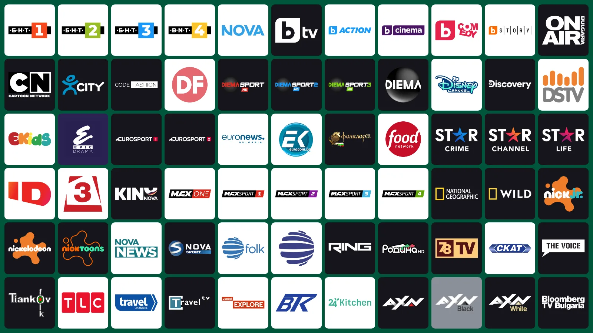

Bulgarian TV, live in Stremio
65+ channels, including BTV, BNT, Nova, Eurosport and Max Sport, from an addon you host yourself.

Turn it on and watch
65+ live channels
The full Bulgarian lineup: news, sports, film, music, kids and more.
Now and next
See what’s on in the catalog, on the channel page and next to the stream.
Every Stremio device
PC, Android TV, Fire TV Stick and any other Stremio client.
No account
No registration and no subscription. It runs on your own server.
One command to start
Docker Compose builds and runs it with nothing to configure.
Sharp logos
High-resolution channel logos, served from your own server.
How it works
It lists the channels
The addon reads the channel list from the source site with
cheerioand serves it as a Stremio TV catalog. The list is cached for 1 hour.It finds the stream
When you pick a channel, the addon fetches that channel’s page and extracts the HLS stream URL from the JWPlayer
file:"…"script.Stremio plays it
Stremio gets a fresh, time-limited
.m3u8URL and plays it directly, with no server in between.
Addon manifest
| ID | org.custom.bgtv |
|---|---|
| Name | BG Live TV |
| Version | 1.0.0 |
| Type | tv |
| Catalog ID | bg_tv |
| ID prefix | bgtv_ |
| Resources | catalog, meta, stream |
| Default port | 7000 |
Run the addon
It starts at http://localhost:7000, whichever way you run it.
The recommended way. Requires Docker Compose.
1. Clone the repository
git clone https://github.com/hjelev/bgtv-stremio.git cd bgtv-stremio
2. Start the addon
docker compose up -d --build
Useful commands
docker compose logs -f # follow logs docker compose down # stop and remove the container
Requires Docker.
1. Build the image
git clone https://github.com/hjelev/bgtv-stremio.git cd bgtv-stremio docker build -t stremio-bgtv .
2. Run the container
docker run -d \ --name stremio-bgtv \ -p 7000:7000 \ --restart unless-stopped \ stremio-bgtv
Stop and remove
docker stop stremio-bgtv docker rm stremio-bgtv
Add it to Stremio
http://localhost:7000/manifest.json
On another device, replace localhost with your server’s local IP, such as http://192.168.1.x:7000/manifest.json.
Open Addons
In Stremio, choose the puzzle-piece icon, then Community Addons and Install from URL.
Paste the manifest URL
Use the address above, or your server’s IP, and choose Install.
Start watching
Open the TV section. Your channels are in the BG Live TV catalog.